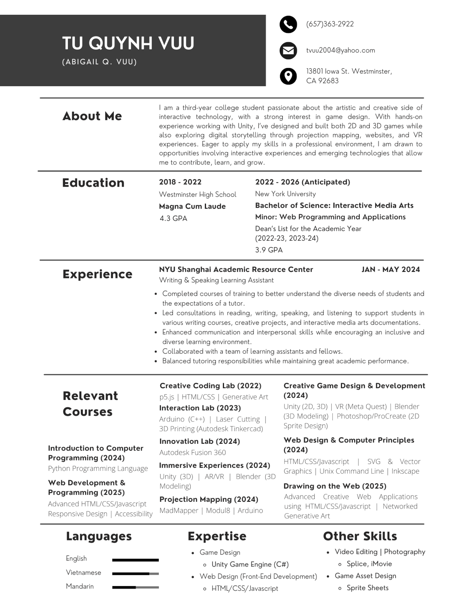

Student Overview
Tu Quynh Kim Vuu
Preferred Name: TQ (She/Her)
Hometown: Orange County, California, USA
School: New York University (Shanghai Campus)
Major: Interactive Media Arts
Minor: Computer Science - Web Programming & Applications
Graduation Year: 2026

Welcome to my portfolio dedicated to all the projects I've done! Through my academic career, I have explored a vast range of focuses within Interactive Media Arts, but I am most drawn to Game Design. My home campus is NYU Shanghai (上海纽约大学), and I am currently spending my study away (junior) year in New York. Take a look at my project documentations!